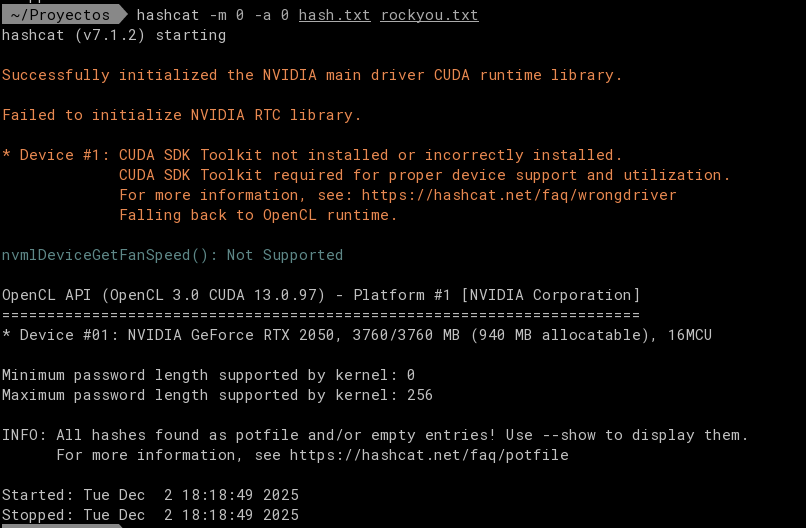
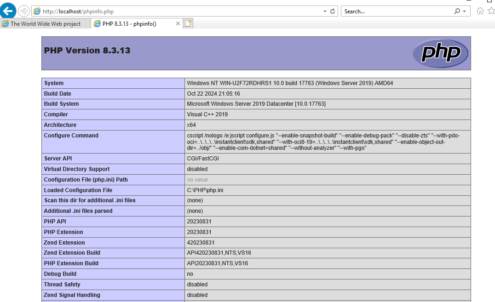

Introduccion
Si estas leyendo esto. Eres un puto pringao’. En esta Web, con suerte, encontraras todo el temario de ASIR 2º. Si quieres añadir algo o crees que algo esta mal puedes escribirme sin ningun problema. Besi de fresi.
Administración de sistemas gestores de bases de datos
Los trabajos y la asistencia cuentan el 50%.
Teoria
Inicializacion de base de datos
Comandos de la teoria
| Comando | Descripción |
|---|---|
| startup nomount | Inicia la instancia sin montar la base de datos (solo memoria y procesos). |
| SELECT status FROM v$instance | Muestra el estado actual de la instancia (STARTED, MOUNTED, OPEN). |
| alter database mount | Monta la base de datos, accediendo a los ficheros de control, sin abrirla. |
| alter database open | Abre la base de datos para operaciones de lectura/escritura. |
| SELECT name FROM v$controlfile | Muestra las rutas de los ficheros de control actuales. |
| ALTER SYSTEM SET control_files = ‘C:\ORACLEXE\APP\ORACLE\ORADATA\XE\CONTROL.DBF’, ‘C:\ORACLEXE\APP\ORACLE\ORADATA\XE\CONTROLC1.DBF’ SCOPE=SPFILE | Modifica el parámetro control_files en el SPFILE para definir las rutas de los ficheros. |
| SELECT name, value, isdefault FROM v$parameter ORDER BY name | Lista parámetros dinámicos de la instancia con su valor y si son por defecto. |
| SELECT name, value, isspecified FROM v$spparameter WHERE value IS NOT NULL ORDER BY name | Muestra parámetros definidos en el SPFILE que tienen valor asignado. |
| CREATE PFILE=‘C:\clase\02_AdmonBD\mis_parametros.ora’ FROM SPFILE | Genera un fichero PFILE a partir del SPFILE actual. |
| SELECT name, value, isbasic, isdefault FROM v$parameter WHERE name LIKE ‘%memory%’ | Consulta parámetros relacionados con memoria (SGA, PGA, etc.). |
1. Marco de Gestión de la Base de Datos
El marco de gestión de una base de datos Oracle 10g/11g consta de tres componentes principales:
- Instancia de la base de datos.
- Listener (permite las conexiones).
- Interfaz de gestión: Puede ser Database Control (versión autónoma de Oracle Enterprise Manager) o un Agente de gestión (al usar Grid Control).
El primer componente en iniciarse debe ser la interfaz de gestión, que luego puede iniciar los demás componentes.
2. Inicialización (Arranque) de la Base de Datos
“Inicializar” la base de datos generalmente significa arrancar la instancia y la base de datos para que acepten conexiones. El proceso de arranque implica cargar en memoria:
- Parámetros de inicialización (SPFILE o INIT.ORA).
- Estructuras internas (SGA, PGA).
- Procesos de fondo.
Técnicamente, el comando STARTUP ejecuta automáticamente los siguientes tres pasos:
| Comando | Estado (Modo) | Descripción |
|---|---|---|
STARTUP NOMOUNT | STARTED (NOMOUNT) | Se crea la instancia: se leen parámetros y se inicializa la SGA y procesos de fondo. No se leen archivos de control ni se abre la base. Se usa para crear una BD nueva o recrear control files. |
STARTUP MOUNT | MOUNTED (MOUNT) | Se montan los archivos de control. La instancia conoce la ubicación de datafiles y redo logs, pero la base no está abierta para usuarios. Se usa para backups/recovery (RMAN) o cambiar a modo ARCHIVELOG. |
STARTUP OPEN (o STARTUP) | OPEN (OPEN) | Estado normal de operación. Se abren los datafiles y redo logs, y la BD está lista para usuarios y transacciones. |
STARTUP UPGRADE | OPEN MIGRATE | Estado especial: BD abierta, pero solo accesible para usuarios con privilegios especiales. Se usa para procesos de migración o actualización del diccionario. |
El estado de la instancia se puede verificar con SELECT status FROM v$instance;.
3. Parada (Apagado) de la Base de Datos
Existen cuatro modos principales de apagar la base de datos desde $SQL*Plus$:
| Comando | Uso | Descripción |
|---|---|---|
SHUTDOWN IMMEDIATE | Recomendado. | Cierra sesiones activas de forma segura y apaga rápido. |
SHUTDOWN NORMAL | Espera a que los usuarios se desconecten. | Puede tardar mucho si hay usuarios conectados. |
SHUTDOWN TRANSACTIONAL | Espera a que terminen las transacciones activas, luego desconecta usuarios. | |
SHUTDOWN ABORT | Solo en emergencias. | Mata procesos inmediatamente. Requiere RECOVER o checkpoint al levantar la BD. |
4. Ficheros Clave de la Base de Datos
A. Fichero de Configuración: SPFILE
- SPFILE (Server Parameter File) es un fichero binario recomendado que Oracle usa al arrancar la instancia.
- Se modifica con comandos SQL como
ALTER SYSTEM SET parámetro valor SCOPE = SPFILE;. - Los parámetros pueden ser dinámicos (se cambian con la BD abierta,
SCOPE=BOTH) o estáticos (requieren reinicio,SCOPE=SPFILE). - Se puede ver si la instancia usa SPFILE consultando
SHOW PARAMETER spfile;. - El contenido del SPFILE se puede ver en la vista
v$spparameter.
B. Ficheros de Control: Control Files
- Archivos críticos que contienen el mapa y metadata esencial de la base de datos.
- Almacenan el nombre de la BD, el SCN, la ubicación y estado de datafiles y redo logs, y el modo ARCHIVELOG.
- Oracle recomienda al menos dos copias (multiplexación) para evitar pérdidas.
- Se leen en
STARTUP MOUNTyOPEN. - Su ubicación se consulta con
SHOW PARAMETER control_files;oSELECT name FROM v$controlfile;.
C. Ficheros de Redo Log: Redo Log Files
- Registran todas las modificaciones (DML y DDL) hechas en la base de datos para permitir la recuperación tras un fallo.
- Están organizados en Redo Log Groups, donde cada grupo puede contener uno o más archivos idénticos (multiplexación).
- El proceso de rotar de un grupo a otro se llama log switch.
¿Te gustaría que profundice en alguno de los estados de la base de datos o en los comandos de parada?
Practicas
Administración de sistemas operativos
Ciberseguridad
Teoria
Practicas
practica 10.3 Hashcat
Actividad 10.3
Pedro de Cabo Arroyo, 2ºB ASIR, Ciberseguridad.
Hashcat es una herramienta avanzada de recuperación de contraseñas que utiliza técnicas de fuerza bruta y ataques de diccionario para descifrar hashes. En mi caso podre usar la GPU de mi portatil.
Para esta practica he generado mi propio hash de madrid:ed2539fe892d2c52c42a440354e8e3d5

Paso 1.- Identifica el tipo de hash utilizando hash-identifier
Para determinar el algoritmo utilizado en la cadena ed2539fe892d2c52c42a440354e8e3d5, se emplea la herramienta hash-identifier. Esta utilidad analiza la longitud y el formato de la cadena hexadecimal para sugerir el tipo de hash más probable.
Ejecución:
hash-identifier
Al introducir el hash cuando se solicita, el sistema devuelve los resultados más probables. Dado que es una cadena de 32 caracteres hexadecimales, el resultado principal será MD5.

Nota: El hash corresponde a la cadena de texto “madrid”.
Paso 2.- Descifra el hash con HashCat
Hashcat se utiliza para recuperar la contraseña mediante fuerza bruta o ataques de diccionario, aprovechando la potencia de la GPU para acelerar el proceso. Aunque puede ejecutarse en CPU, el rendimiento es significativamente menor.
Es mi equipo y con el puedo hacer lo que quiera.
Sintaxis del comando:
hashcat -m 0 -a 3 ed2539fe892d2c52c42a440354e8e3d5

Explicación de parámetros:
hashcat: Ejecutable de la herramienta.-m 0: Especifica el tipo de hash (Mode). El modo0corresponde a MD5, identificado en el paso anterior. Hashcat soporta una amplia gama de algoritmos.-a 3: Define el modo de ataque (Attack Mode). Se selecciona Brute-Force (Fuerza bruta con máscara).ed2...3d5: El hash objetivo a descifrar.
Salida exitosa:
Tras la ejecución, Hashcat mostrará el estado Cracked y la cadena en texto plano:
ed2539fe892d2c52c42a440354e8e3d5:madrid
Si se utilizara un archivo de diccionario (ej. rockyou.txt) en lugar de fuerza bruta pura, el comando cambiaría el modo de ataque a -a 0:
hashcat -m 0 -a 0 hash.txt /Proyectos/rockyou.txt
El resultado final:


Digitalización aplicada a los sectores productivos (GS)
Implantación de aplicaciones web
Tarea Nº 7 - Despliegue Nginx
1. Detener el servidor Apache2
sudo systemctl stop apache2
2. Deshabilitar el inicio automático de Apache2
sudo systemctl disable apache2
3. Instalar el paquete Nginx
sudo apt update
sudo apt install nginx -y
4 y 8. Configuración de Virtual Hosts (Puerto 80 y 81) y creación de contenido
Creación de directorios y ficheros index.html para diferenciar los sitios:
# Sitio Puerto 80
sudo mkdir -p /var/www/sitio80
echo "<h1>Web en Puerto 80 - Nginx</h1>" | sudo tee /var/www/sitio80/index.html
# Sitio Puerto 81
sudo mkdir -p /var/www/sitio81
echo "<h1>Web en Puerto 81 - Nginx</h1>" | sudo tee /var/www/sitio81/index.html
Creación del fichero de configuración /etc/nginx/sites-available/multi-port:
server {
listen 80;
server_name localhost;
location / {
root /var/www/sitio80;
index index.html;
}
}
server {
listen 81;
server_name localhost;
location / {
root /var/www/sitio81;
index index.html;
}
}
Habilitar la configuración y eliminar el enlace por defecto para evitar conflictos:
sudo ln -s /etc/nginx/sites-available/multi-port /etc/nginx/sites-enabled/
sudo rm /etc/nginx/sites-enabled/default
5. Comandos de gestión del servicio Nginx
- Arranque:
sudo systemctl start nginx - Parada:
sudo systemctl stop nginx - Estado:
sudo systemctl status nginx - Recarga (sin corte de servicio):
sudo systemctl reload nginx
6. Rutas de ficheros
- Configuración principal:
/etc/nginx/nginx.conf - Configuración de sitios (vhosts):
/etc/nginx/sites-available/y/etc/nginx/sites-enabled/ - Directorio Web (root):
/var/www/ - Logs de acceso:
/var/log/nginx/access.log - Logs de error:
/var/log/nginx/error.log
7. Verificación de sintaxis
sudo nginx -t
Si la salida es “syntax is ok” y “test is successful”, proceder con el reinicio o recarga.
Solución al problema de visualización de la página de Apache
Si al entrar al puerto 80 sigue apareciendo la página de “Apache2 Default Page”, se debe a una de las siguientes causas:
- Caché del navegador: El navegador ha guardado la versión anterior.
- Solución: Probar acceso con
curl localhostdesde la terminal o usar modo incógnito (Ctrl+Shift+N).
- Solución: Probar acceso con
- Raíz por defecto compartida: Si no se elimina el sitio
defaultde Nginx y este apunta a/var/www/html, mostrará elindex.htmlque dejó Apache instalado en esa ruta.- Solución: Asegurar la ejecución del comando
sudo rm /etc/nginx/sites-enabled/defaultindicado en el punto 4 y recargar Nginx (sudo systemctl reload nginx).
- Solución: Asegurar la ejecución del comando
- Proceso Zombie: Apache no se detuvo correctamente y sigue ocupando el puerto 80.
- Diagnóstico:
sudo lsof -i :80osudo netstat -tulpn | grep :80 - Solución: Si aparece
apache2en el resultado, ejecutarsudo killall apache2.
- Diagnóstico:
Verificación final (Simulación de capturas)
Ejecutar en terminal para validar funcionamiento:
curl http://localhost:80
# Salida esperada: <h1>Web en Puerto 80 - Nginx</h1>
curl http://localhost:81
# Salida esperada: <h1>Web en Puerto 81 - Nginx</h1>
Script automatico
Guardar el siguiente contenido en un fichero llamado setup_nginx.sh, dar permisos de ejecución y lanzar con privilegios de root.
#!/bin/bash
# Comprobación de privilegios
if [ "$EUID" -ne 0 ]; then
echo "Error: Este script debe ejecutarse como root."
exit 1
fi
echo "--- INICIO DE CONFIGURACIÓN AUTOMATIZADA ---"
# 1 & 2. Gestión de Apache2 (Detener y Deshabilitar)
echo "[1/5] Deteniendo y deshabilitando Apache2..."
systemctl stop apache2
systemctl disable apache2
# Liberación forzosa del puerto 80 si Apache se quedó "zombie"
fuser -k 80/tcp 2>/dev/null
# 3. Instalación de Nginx
echo "[2/5] Instalando Nginx..."
apt-get update -qq
apt-get install nginx -y -qq
# 4 & 8. Creación de contenido web (Directorios e index.html)
echo "[3/5] Generando contenido web para puertos 80 y 81..."
mkdir -p /var/www/sitio80
mkdir -p /var/www/sitio81
echo "<h1>Sitio Web Puerto 80 - Script</h1>" > /var/www/sitio80/index.html
echo "<h1>Sitio Web Puerto 81 - Script</h1>" > /var/www/sitio81/index.html
# Generación del fichero de configuración de Nginx
echo "[4/5] Escribiendo configuración de VHosts..."
cat <<EOF > /etc/nginx/sites-available/multi-port
server {
listen 80;
server_name localhost;
location / {
root /var/www/sitio80;
index index.html;
}
}
server {
listen 81;
server_name localhost;
location / {
root /var/www/sitio81;
index index.html;
}
}
EOF
# Enlace simbólico y limpieza de default
ln -sf /etc/nginx/sites-available/multi-port /etc/nginx/sites-enabled/
rm -f /etc/nginx/sites-enabled/default
# 7. Verificación y aplicación
echo "[5/5] Verificando y reiniciando servicio..."
if nginx -t; then
systemctl restart nginx
echo "--- CONFIGURACIÓN COMPLETADA CON ÉXITO ---"
# Test local
echo "Test Puerto 80:"
curl -s http://localhost:80
echo ""
echo "Test Puerto 81:"
curl -s http://localhost:81
echo ""
else
echo "Error: La configuración de Nginx no es válida."
exit 1
fi
Instrucciones de ejecución:
chmod +x setup_nginx.sh
sudo ./setup_nginx.sh
Inglés profesional (GS)
Seguridad y alta disponibilidad
Este resumen abarca el Módulo Profesional de Seguridad y Alta Disponibilidad del Ciclo Formativo de Técnico Superior en Administración de Sistemas Informáticos en Red (ASIR), modalidad PRESENCIAL, para el curso académico 2025/2026.
1. Identificación y Competencia General
- Módulo Profesional: Seguridad y alta Disponibilidad.
- Ciclo Formativo: Administración de Sistemas Informáticos en Red.
- Nivel: Superior[cite: 10].
- Competencia General del Ciclo: Configurar, administrar y mantener sistemas informáticos, garantizando la funcionalidad, la integridad de los recursos y servicios del sistema, con la calidad exigida y cumpliendo la reglamentación vigente.
2. Unidades de Competencia (UC) Acreditables
El módulo profesional contribuye a acreditar las siguientes Unidades de Competencia:
- UC0486_3: Asegurar equipos informáticos.
- UC0484_3: Administrar los dispositivos hardware del sistema.
- UC0485_3: Instalar, configurar y administrar el software de base y de aplicación del sistema.
3. Resultados de Aprendizaje (RA) y Unidades Didácticas (UD)
El módulo se estructura en 7 Unidades Didácticas (UD) y una UD Inicial, vinculadas a 7 Resultados de Aprendizaje (RA).
| RA | UD | Título y Conceptos Clave | Periodo de Duración (Inicio) |
|---|---|---|---|
| RA 1 | UD 1 | Adopción de pautas de seguridad informática: Visión global (Confidencialidad, Integridad y Disponibilidad), Seguridad física y ambiental, control de accesos físicos, Sistemas de Alimentación Ininterrumpida (SAI), Activo informático, amenaza, vulnerabilidad, riesgo. | 16/10/2025 |
| RA 2 | UD 2 | Implantar mecanismos de seguridad activa: Ataques y contramedidas, malware (virus, gusanos, spyware, keylogers), seguridad en BIOS, autenticación, protocolos seguros (IPsec, SSL/TSL, PGP, S/MIME), seguridad en red corporativa y pública, herramientas preventivas y paliativas. | 30/10/2024 |
| RA 3 | UD 3 | Implanta técnicas seguras de acceso remoto: Seguridad perimetral (bastión, cortafuegos, proxys, VPNs - Virtual Private Networks), arquitecturas de seguridad perimetral, Zonas Desmilitarizadas (DMZ - Demilitarized Zone). | 14/11/2024 |
| RA 4 | UD 4 | Implantar cortafuegos: Tipos (por tecnología: filtrado de paquetes, pasarelas de aplicación/circuitos; por ubicación: personales, SOHO, corporativos), software vs. hardware, reglas de filtrado, integración (NAT, VPNs, IDS). | 11/12/2025 |
| RA 5 | UD 5 | Implantación de servidores proxy: Tipos, características y funciones, instalación y configuración (proxy-cache, filtros, autenticación, modo transparente/inverso), monitorización y registros de actividad (logs). | 25/12/2025 |
| RA 6 | UD 6 | Implantación de soluciones de alta disponibilidad: Definición y objetivos, balanceadores de carga, servidores redundantes, sistemas de clusters, almacenamiento compartido, virtualización de sistemas (posibilidades y herramientas). | 08/01/2026 |
| RA 7 | UD 7 | Reconocer la legislación y normativa sobre seguridad: Legislación sobre protección de datos y sobre los servicios de la sociedad de la información y correo electrónico. | 22/04/2025 |
4. Metodología Didáctica
La metodología es interactiva y contextualizada , con un enfoque fundamentalmente procedimental mediante la realización de prácticas.
-
Principios Metodológicos Clave:
- Exposición de conceptos teórico-prácticos en clase.
- Planteamiento de ejercicios y actividades en el aula.
- Desarrollo de prácticas que el equipamiento permita.
- Realización de trabajos y exposiciones por parte del alumnado.
- Fomento del trabajo individual o en grupo.
- Atención individualizada por parte de los profesores.
- Fomento de la autonomía y responsabilidad del alumnado.
-
Tutorías: Se llevarán a cabo diversos tipos de tutorías:
- Colectiva Inicial: Presentación de contenidos, criterios de evaluación y calificación, información sobre la plataforma virtual de aprendizaje.
- Colectiva Presencial (Voluntaria): Para desarrollar actividades prácticas que precisen atención directa del profesor y uso de instalaciones del centro.
- Colectiva No Presencial (Voluntaria): Uso de TIC para facilitar autoaprendizaje, autoevaluación y seguimiento de actividades en la plataforma virtual.
-
Recursos y Materiales: Disponibles en el aula virtual del curso.
- Materiales: Documentación (presentaciones en formato PDF), vídeos, actividades/test de autoevaluación.
- Recursos: Campus virtual, herramienta de videoconferencias (Class Collaborate, Teams), materiales audiovisuales, ejercicios y actividades prácticas.
5. Evaluación
- Criterio de Superación: Para superar el módulo se deben superar todos los Resultados de Aprendizaje (RA).
- Convocatorias: Ordinaria (mayo) y Extraordinaria (junio).
- Prueba de Evaluación Final: Se programará una prueba de evaluación final de carácter presencial y de asistencia obligatoria.
- Calificación Mínima: La superación requiere una calificación igual o superior a cinco en la prueba de evaluación final correspondiente.
- Cálculo de Calificación: La calificación final del módulo profesional se obtendrá del 100% de la calificación obtenida en la prueba de evaluación presencial.
- Instrumentos Propuestos: El examen puede incluir preguntas tipo TEST y preguntas a desarrollar de cualquiera de los contenidos impartidos.
- Restricciones de Calificación: No podrán establecerse criterios de calificación que valoren la asistencia a clase, comportamientos objeto de sanción disciplinaria u otras cuestiones no relacionadas con los RA.
- Criterios Éticos: La realización de actos lesivos durante las pruebas de evaluación supondrá la no superación del módulo profesional en la convocatoria correspondiente.
6. Medidas de Atención a la Diversidad (ACNEAE)
Para el alumnado con Necesidad Específica de Apoyo Educativo (ACNEAE), el equipo docente determinará las medidas en los procedimientos de evaluación, siempre que no impidan la adquisición de la competencia general.
-
Medidas Metodológicas (Ejemplos):
- Utilización de medios técnicos e informáticos (dificultad motricidad fina o déficit visual).
- Utilización de recursos técnicos (déficit auditivo).
- Adaptación de accesos, espacios y mobiliario (dificultades de movilidad).
-
Adaptaciones en Pruebas de Evaluación (Ejemplos):
- Adaptación de tiempos: Hasta un 25% para quienes acrediten Dificultades Específicas de Aprendizaje (DEA), Trastorno por Déficit de Atención e Hiperactividad (TDAH) o dislexia.
- Adaptación del formato de examen: Aumento del tamaño/tipo de fuente e interlineado, e incorporación de espacio suficiente entre cuestiones (déficit visual, TDAH, DEA o dislexia).
- Pruebas en formato digital: Deberá imprimirse al finalizar y firmarse por el alumno en todas sus páginas (problemas de motricidad fina, déficit visual o dificultades en la escritura).
Servicios de red e Internet
Teoria
Historia WWW
Dos trabajos servicio web y ftp. para el 15 y el 19 de Diciembre.
Historia WWW
Ambos (la primera web, y la WWW) son obra de un mismo autor: el científico británico Tim Berners-Lee, en aquel entonces investigador del prestigioso Laboratorio Europeo de Física de Partículas (CERN) de Ginebra. La primera página web de la Historia sigue funcionando y puedes navegar por ella Reproducción de la primera página The World Wide Web project The WorldWideWeb (W3) is a wide-area hypermedia information retrieval initiative aiming to give universal access to a large universe of documents. Accede a la réplica de la primera página web que se configuró The World Wide Web project. Accede mediante el comando curl para poder descargar la primera página en un fichero index.html y visualizarlo localmente. Activa en el Windows Server el rol de IIS (Servicios web) y monta esta página. Sube una captura de un navegador del Windows Server accediendo a http://localhost donde se puede ver el contenido de esta página.
Enlaces de Interes:
- https://www.xataka.com/privacidad/tim-berners-lee-creo-web-ahora-quiere-salvarla-vez
- https://www.genbeta.com/web/primera-pagina-web-historia-sigue-funcionando-puedes-navegar-ella-1
- https://info.cern.ch/hypertext/WWW/TheProject.html
- https://info.cern.ch/hypertext/WWW/WhatIs.html
- https://info.cern.ch/hypertext/WWW/TheProject.html
Comando CURL.
curl en una herramienta para la transferencia de datos desde un servidor o una web usando un URLs. Soporta los siguientes protocolos: DICT, FILE, FTP, FTPS, GOPHER, GOPHERS, HTTP, HTTPS, IMAP, IMAPS, LDAP, LDAPS, MQTT, POP3, POP3S, RTMP, RTMPS, RTSP, SCP, SFTP, SMB, SMBS, SMTP, SMTPS, TELNET, TFTP, WS and WSS.
curl https://download.fedoraproject.org/pub/fedora/linux/releases/43/Server/x86_64/iso/Fedora-Server-dvd-x86_64-43-1.6.iso
Parametros de inteneres
-v: se utiliza para obtener una salida más detallada del proceso de comunicación.
El parámetro -v (o --verbose) en el comando curl se utiliza para obtener una salida más detallada del proceso de comunicación.
La salida verbosa incluye:
- Detalles de la conexión: Información sobre la resolución DNS, el intento de conexión y el puerto.
- Encabezados de solicitud (Request Headers): Los encabezados HTTP que
curlenvía al servidor (marcados con>). - Información de negociación SSL/TLS (si aplica).
- Encabezados de respuesta (Response Headers): Los encabezados HTTP que el servidor devuelve (marcados con
<). - Notas informativas del proceso de transferencia (marcadas con
*).
Practicas
Practicas
Utiliza el equipo Windows Server de la práctica anterior que ya dispone de rol de DHCP y DNS. Tendrás que cambiar el hostname por WIN-tunombreinicialapellido, esto requerirá que adaptes los registros de DNS para que recojan los cambios.
Instala el rol de IIS en el Windows Server. Presenta una captura con la página www.tunombre.tuapellido que será una réplica de la primera página de Internet (mira los debates para saber más sobre esto). (4 puntos contenido mínimo)
Configura los enlaces del sitio (site bindings) para que sea accesible sólo por www.tunombre.tuapellido. Accede desde el propio Windows Server con http://localhost. Presenta captura del site binding, explica qué ocurre. (2 puntos)
Realiza una instalación de PHP para disponer de una página dinámica (no estática como la anterior). Ten en cuenta los siguientes manuales:
- Paso 0. Últimas descargas de Visual C++ Redistributable compatibles | Microsoft Learn (https://learn.microsoft.com/es-es/cpp/windows/latest-supported-vc-redist?view=msvc-170#latest-supported-redistributable-version)
- PHP For Windows: Binaries and sources Releases (https://windows.php.net/download/)
IIS
Si usas PHP como FastCGI con IIS debes usar las versiones Non-Thread Safe (NTS) de PHP.
- FastCGI
<fastCgi>| Microsoft Learn (https://learn.microsoft.com/en-us/iis/configuration/system.webserver/fastcgi/) - Step 1: Install IIS and PHP | Microsoft Learn (https://learn.microsoft.com/en-us/previous-versions/windows/it-pro/windows-server-2012-r2-and-2012/hh994592(v=ws.11)#13-download-and-install-php-manually)
- PHP: Instalación con IIS para Windows - Manual (https://www.php.net/manual/es/install.windows.iis.php)
Captura (donde se vea autoría - nombre del servidor con tu nombre y apellidos) semejante a esta con el acceso a la página http://www.tunombre.tuapellido/phpinfo.php. (3 puntos)
Si no consigues llegar hasta aquí, presenta captura/vídeo con el último paso dado: directorio con la instalación, ejecución de script, etc. Captura del mismo acceso desde un equipo cliente (puedes utilizar el Windows 11 de la otra práctica). Requiere configuración de host-only en VirtualBox. Adapta el php para que muestre información del cliente (1 punto)
- Información del cliente y servidor con PHP - Victor Robles | Victor (https://victorroblesweb.es/2013/11/18/informacion-del-cliente-y-servidor-con-php/)

En total cuatro capturas.
Aquí un blog con los pasos que ha dado el autor para unir todos los pasos:
Como instalar PHP sobre IIS 10 en Windows Server 2019 Datacenter – Mtro. Guillermo Humberto Vera Amaro (https://www.uv.mx/personal/gvera/2022/02/26/como-instalar-php-sobre-iis-10-en-windows-server-2019-datacenter/)
Solucion
Cambio de Hostname y Ajuste DNS
Acceder a Administrador del servidor > Servidor local. Clic en el nombre del equipo actual. En Propiedades del sistema > Cambiar. Asignar nuevo nombre: WIN-[Inicial][Apellido] (ej. WIN-JPEREZ). Reiniciar el servidor.
Abrir Administrador de DNS (dnsmgmt.msc).
En Zonas de búsqueda directa > Dominio local.
Eliminar el registro A antiguo del servidor.
Verificar o crear nuevo registro A para WIN-[Inicial][Apellido] apuntando a la IP estática del servidor.
Crear un registro CNAME (alias) o A para www.tunombre.tuapellido apuntando a la misma IP.
Instalación de IIS y CGI
En Administrador del servidor > Administrar > Agregar roles y características. Seleccionar tipo de instalación basada en características o en roles. En Roles del servidor, marcar Servidor web (IIS). En Servicios de rol (dentro de Servidor web > Desarrollo de aplicaciones), marcar CGI (necesario para FastCGI/PHP). Completar la instalación.
Configuración del Sitio Web (Réplica)
Crear carpeta física: C:\inetpub\wwwroot\websitename.
Crear archivo index.html con el código HTML de la réplica de la primera página web.
Abrir Administrador de Internet Information Services (IIS).
Clic derecho en Sitios > Agregar sitio web.
Nombre del sitio: www.tunombre.tuapellido.
Ruta de acceso física: Seleccionar la carpeta creada.
En Enlace > Nombre de host: escribir www.tunombre.tuapellido.
Site Bindings y Test Localhost
En IIS, seleccionar el sitio creado.
En el panel de acciones (derecha), clic en Enlaces… (Bindings).
Verificar que el tipo es http, puerto 80 y Nombre de host www.tunombre.tuapellido.
Prueba localhost:
Abrir navegador en el servidor y acceder a http://localhost.
Resultado: Error 404 o página por defecto de IIS (IIS Welcome), no el sitio creado.
Explicación: El servidor web recibe la petición, pero al tener un Host Header definido en el enlace (“www…”), IIS descarta las peticiones que llegan con la cabecera “localhost”. Solo sirve el contenido si la cabecera HTTP coincide estrictamente.
Instalación y Configuración de PHP (NTS)
Descarga y Preparación:
Descargar e instalar Visual C++ Redistributable (vc_redist.x64.exe).
Descargar PHP Non-Thread Safe (NTS) x64 zip.
Descomprimir en C:\PHP.
Renombrar php.ini-production a php.ini.
Edición de php.ini:
Abrir php.ini con editor de texto.
Descomentar y ajustar extension_dir = "ext".
Descomentar extension=curl, extension=mbstring, extension=mysqli (según necesidad).
Configurar zona horaria: date.timezone = "Europe/Madrid".
Guardar cambios.
Variables de Entorno:
Sistema > Configuración avanzada del sistema > Variables de entorno.
En Variables del sistema, editar Path.
Agregar nueva ruta: C:\PHP.
Integración en IIS:
Abrir Administrador de IIS.
Clic en el nombre del servidor (panel izquierdo).
Doble clic en Asignaciones de controlador (Handler Mappings).
En el panel derecho, clic en Agregar asignación de módulo.
Ruta de acceso de solicitudes: *.php
Módulo: FastCgiModule (Seleccionar de la lista. Si no aparece, revisar instalación del rol CGI).
Ejecutable: C:\PHP\php-cgi.exe.
Nombre: PHP_FastCGI.
Confirmar diálogo de autorización.
Mover index.php a Documento predeterminado (Default Document) si se desea prioridad sobre html.
Script PHP y Acceso Cliente
Creación de Scripts:
En C:\inetpub\wwwroot\websitename, crear archivo phpinfo.php:
<?php phpinfo(); ?>
Crear archivo para info cliente (ej. info_cliente.php):
<?php
echo "<h1>Información del Cliente</h1>";
echo "IP del Cliente: " . $_SERVER['REMOTE_ADDR'] . "<br>";
echo "Navegador: " . $_SERVER['HTTP_USER_AGENT'] . "<br>";
echo "Servidor: " . $_SERVER['SERVER_NAME'];
?>
Configuración Cliente (Windows 11):
Configurar adaptador de red en VirtualBox como Red interna o Adaptador solo anfitrión (Host-only), asegurando visibilidad con el servidor.
Configurar DNS del cliente: Asignar la IP estática del Windows Server como DNS preferido.
Alternativa sin DNS: Editar C:\Windows\System32\drivers\etc\hosts en el cliente y añadir:
<IP_SERVER> www.tunombre.tuapellido
Validación:
Navegador cliente > http://www.tunombre.tuapellido/phpinfo.php.
Navegador cliente > http://www.tunombre.tuapellido/info_cliente.php.